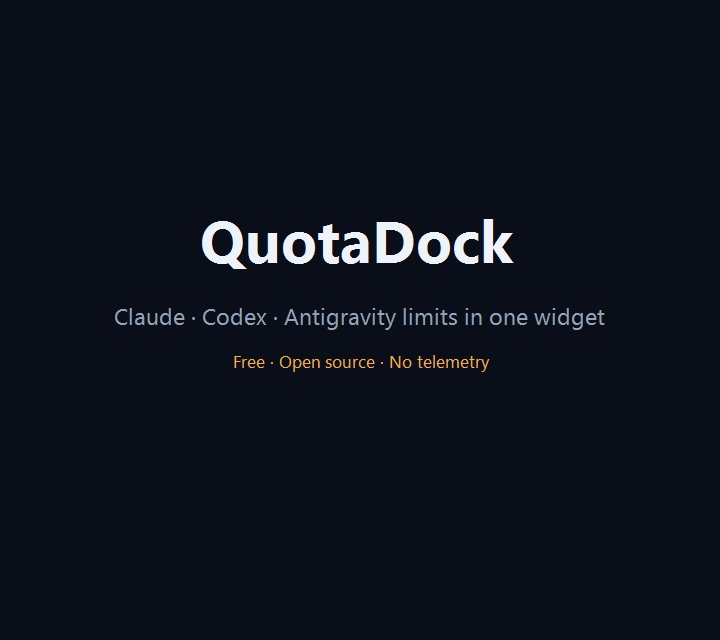

A small Windows widget that shows how much Claude, Codex and Antigravity quota you have left — and exactly when each one resets.

Windows 10 22H2+ / 11 · MIT · free · no account
If you work with Claude Code, Codex CLI or Antigravity, you end up asking the same two questions all day: how much of the 5-hour session is left, and when does the weekly limit come back. QuotaDock answers both without you having to go and look.
Each row draws remaining quota above a thin bar counting down to reset. Comparing the two tells you whether you are burning through the window faster than the clock is.
| Provider | What it shows | How it connects |
|---|---|---|
| Claude | 5-hour session · 7-day weekly · Fable weekly | Claude Code's existing OAuth credentials |
| OpenAI Codex | Session · weekly limits | Official Codex CLI app-server over stdio |
| Google Antigravity | Gemini and Claude/GPT group session · weekly | Its language server on 127.0.0.1 |
Use one of them or all three. If a provider fails, the others keep going.
The precise details of what it reads and where it connects are in SECURITY.md, written to match the code rather than to sound reassuring.
The binaries are not code-signed yet, so Windows will show a "Windows protected your PC" dialog the first time you run one. That means Windows hasn't seen the file before, not that it found something wrong.
Every release ships SHA256SUMS.txt. In PowerShell:
Get-FileHash .\QuotaDock-<version>-win-x64-portable.exe -Algorithm SHA256Compare that against the matching line in the release. You can also build from source —
the release script is in build/windows/. If you would rather not run an
installer, the portable executable is one file and deleting it is the whole uninstall.
QuotaDock is maintained by one person,
jungdosa, who writes the code, reviews it and
approves every release. Release artifacts are produced from the public source in this
repository using the build script under build/windows/.
| Role | Held by |
|---|---|
| Author | jungdosa |
| Reviewer | jungdosa |
| Release approver | jungdosa |
Releases are cut by hand from the public source, not by an unattended pipeline. Each one
is built with the script in build/windows/, checksummed, and published with its
SHA256SUMS.txt. Signing, once in place, will require a deliberate approval step
for every release rather than running automatically.
QuotaDock collects nothing. It has no telemetry, no analytics and no crash reporting, and it does not transmit any personal data. Diagnostic logs stay on your machine with secrets and email addresses redacted before they are written. Update checks reach GitHub without credentials attached.
Until code signing is in place, each release carries SHA-256 checksums for its binaries, and the full source and build script are public. Verified integrity is checked twice during in-app updates: after the download and again immediately before the installer runs.
Twelve, following your Windows display language or picked in Settings: English, Korean, German, French, Italian, Indonesian, Portuguese (Brazil), Spanish (Spain and Latin America), Japanese, Simplified Chinese and Traditional Chinese.